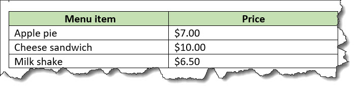
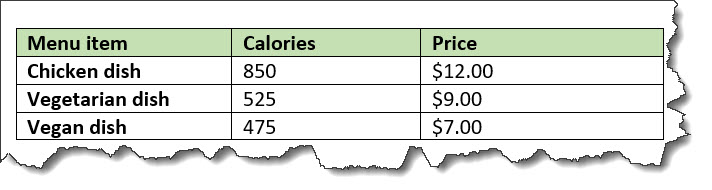

<simpletable>
A simple table is a basic tabular environment that is designed to present organized content.
Usage information
The <simpletable> element is designed for
close compatibility with HTML5 tables.
It can contain a title and allows column and row spanning. The @keycol attribute indicates
the key column. A key column contains content that represents
the key to the tabular structure.
The <simpletable> element can also be used as the base for specialized
structures, such as the property and choice tables that are
available in the Technical Content edition.
Rendering expectations
When a key column is specified for a simple table, it is treated as a vertical header.
Content model
<title>
?,
<sthead>
?,
<strow>
+
Contained by
<abstract>
,
<body>
,
<bodydiv>
,
<dd>
,
<div>
,
<draft-comment>
,
<example>
,
<fig>
,
<howtoavoid>
,
<li>
,
<lq>
,
<note>
,
<p>
,
<section>
Contained by
Inheritance
- topic/simpletable
The <simpletable> element is a base element type. It is defined in the topic module.
Attributes
The following attributes are available on this element: display attributes, simpletable attributes, and universal attributes.
The following attributes are available on this element: universal attributes and the attributes defined below.
@expanse(display attributes)- Specifies the horizontal placement of the element. The
following values are valid:
- column
- Indicates that the element is aligned with the current column margin.
- page
- Indicates that the element is placed on the left page margin for left-to-right presentation or the right page margin for right-to-left presentation.
- spread
- Indicates that the object is rendered across a multi-page spread. If the output format does not have anything that corresponds to spreads, then spread has the same meaning as page.
- textline
- Indicates that the element is aligned with the left (for left-to-right presentation) or right (for right-to-left presentation) margin of the current text line and takes indentation into account.
- -dita-use-conref-target
- See Using the -dita-use-conref-target value for more information.
For
<table>, in place of the@expanseattribute that is used by other DITA elements, the@pgwideattribute is used in order to conform to the OASIS Exchange Table Model.Some processors or output formats might not support all values.
@frame(display attributes)- Specifies which portion of a border surrounds the element.
The following values are valid:
- all
- Indicates that a line is rendered at the top, bottom, left, and right of the containing element.
- bottom
- Indicates that a line is rendered at the bottom of the containing element.
- none
- Indicates that no lines are rendered.
- sides
- Indicates that a line is rendered at the left and right of the containing element.
- top
- Indicates that a line is rendered at the top of the containing element.
- topbot
- Indicates that a line is rendered at the top and bottom of the containing element.
- -dita-use-conref-target
- See Using the -dita-use-conref-target value for more information.
Some processors or output formats might not support all values.
@keycol(simpletable attributes)- Specifies the column that contains the
content that represents the key to the tabular
structure. If
@keycolis present and assigned a numerical value, the specified column is treated as a vertical header. @relcolwidth(simpletable attributes)- Specifies the width of each column in relationship to the
width of the other columns. The value is a space-separated list
of relative column widths. Each column width is specified as a
positive integer or decimal number followed by an asterisk
character.
For example, the value
relcolwidth="1* 2* 3*"gives a total of 6 units across three columns. The relative widths are 1/6, 2/6, and 3/6 (16.7%, 33.3%, and 50%). Similarly, the valuerelcolwidth="90* 150*"causes relative widths of 90/240 and 150/240 (37.5% and 62.5%). @scale(display attributes)- Specifies the percentage by which fonts are resized in
relation to the normal text size. The value of this attribute
is a positive integer. When used on
<table>or<simpletable>, the following values are valid: 50, 60, 70, 80, 90, 100, 110, 120, 140, 160, 180, 200, and -dita-use-conref-target.This attribute is primarily useful for print-oriented display. Some processors might not support all values.
If the
@scaleattribute is specified on an element that contains an image, the image is not scaled. The image is scaled only if a scaling property is explicitly specified for the<image>element.
Examples
This section contains examples of how the
<simpletable> element can be used.
The following code sample shows a simple table that contains menu items and prices:
<simpletable>
<sthead>
<stentry>Menu item</stentry>
<stentry>Price</stentry>
</sthead>
<strow>
<stentry>Apple pie</stentry>
<stentry>$7.00</stentry>
</strow>
<strow>
<stentry>Cheese sandwich</stentry>
<stentry>$10.00</stentry>
</strow>
<strow>
<stentry>Milk shake</stentry>
<stentry>$6.50</stentry>
</strow>
</simpletable>The simple table might be rendered in the following way:

The following code sample shows a simple table that tracks meals. The table has a title and column and row spans.
<simpletable>
<title>Food log for Wednesday</title>
<sthead>
<stentry>Meal</stentry>
<stentry>Food</stentry>
</sthead>
<strow>
<stentry colspan="2">Fasting period</stentry>
</strow>
<strow>
<stentry>Lunch</stentry>
<stentry rowspan="2">Pasta</stentry>
</strow>
<strow>
<stentry>Dinner</stentry>
</strow>
</simpletable>The simple table might be rendered in the following way:

@keycolThe following code sample shows a simple table
that contains information about the caloric content and prices of
menu items. The @keycol attribute indicates that
the first column, which contains the menu items, is the key
column.
<simpletable keycol="1">
<sthead>
<stentry>Menu item</stentry>
<stentry>Calories</stentry>
<stentry>Price</stentry>
</sthead>
<strow>
<stentry>Chicken dish</stentry>
<stentry>850</stentry>
<stentry>$12.00</stentry>
</strow>
<strow>
<stentry>Vegetarian dish</stentry>
<stentry>525</stentry>
<stentry>$9.00</stentry>
</strow>
<strow>
<stentry>Vegan dish</stentry>
<stentry>475</stentry>
<stentry>$7.00</stentry>
</strow>
</simpletable>This simple table might be rendered in the following way:

In the sample rendering, the content of the key column is highlighted with bold formatting. However, note that rendering of the key column is left up to the implementation.